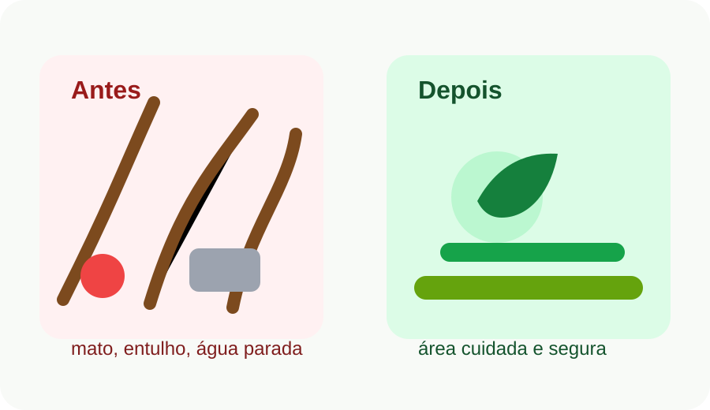
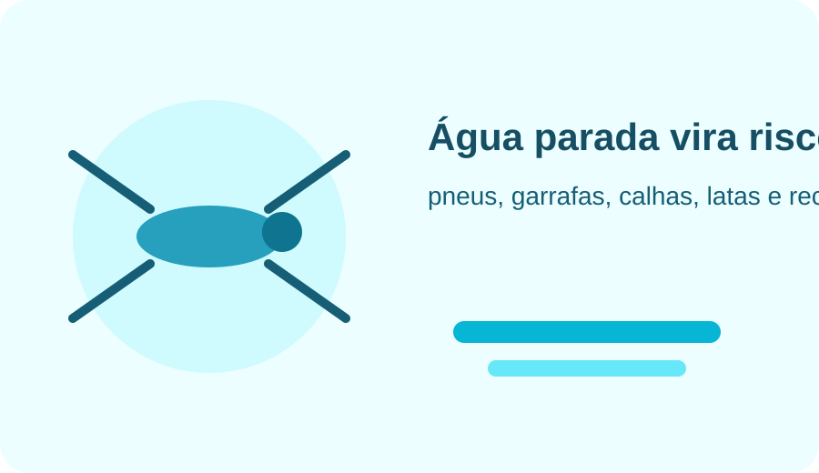
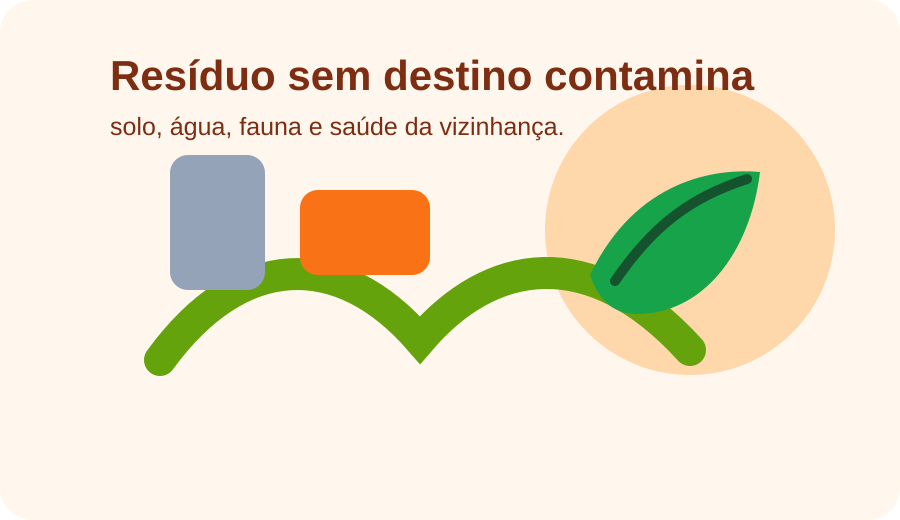

Limpeza de terrenos
Roçagem, retirada visual de excesso de mato, folhas, galhos e organização inicial da área.
O Quintal Vivo GO une serviço de limpeza, prevenção contra dengue, descarte consciente e educação ambiental para transformar áreas abandonadas em espaços mais seguros.
Atendimento pelo WhatsApp: (64) 99907-5881

O serviço resolve o problema visível do mato e do lixo, mas também ajuda a reduzir riscos para a vizinhança.
Roçagem, retirada visual de excesso de mato, folhas, galhos e organização inicial da área.
Orientação para eliminar recipientes que acumulam água e pontos que favorecem o Aedes aegypti.
Separação do que pode ser destinado corretamente, evitando que lixo vire foco de doença e poluição.
Informação clara para o morador entender por que cuidar do lote é proteger a casa, a rua e a cidade.
O mato alto, o entulho e o lixo acumulado criam uma cadeia de consequências para a saúde, a segurança e a natureza.

Garrafas, pneus, latas, baldes, plásticos e qualquer recipiente esquecido no lote podem acumular água. A prevenção começa removendo o que segura água e mantendo a área vistoriada.
Ler orientação do Ministério da Saúde
Resíduos sem manejo correto podem degradar solo, lençol freático e cursos d’água, além de favorecer vetores de doenças. Limpar é só uma parte: dar destino correto ao resíduo é o passo responsável.
Ver orientação da Semad GoiásEsta página direciona o visitante para fontes oficiais e reportagens reais sobre dengue, resíduos, limpeza urbana e riscos de terrenos abandonados.
Explica sintomas, prevenção e cuidados contra a dengue, incluindo remoção de recipientes que podem virar criadouros.
Abrir fonte oficialInformações oficiais sobre o mosquito transmissor da dengue, zika e chikungunya.
Abrir fonte oficialPainel público com indicadores da dengue em Goiás, útil para acompanhar o cenário estadual e regional.
Abrir indicadoresMostra como resíduos mal gerenciados causam danos ambientais e problemas de saúde pública.
Abrir Semad GoiásCanal oficial municipal para acompanhar serviços, comunicados e contatos públicos da cidade.
Abrir site da prefeituraConteúdo público sobre regras e multas relacionadas a lotes baldios e focos do mosquito em Goiânia.
Abrir notícia oficialOs botões abaixo levam para reportagens reais. Elas ajudam o visitante a entender que lote sujo, água parada e lixo acumulado afetam toda a comunidade.
Reportagem sobre entulhos e objetos nas ruas gerando criadouros do Aedes aegypti.
Assistir reportagemExemplo de reclamação sobre mato alto e abandono em área urbana.
Assistir reportagemAlerta sobre lixo acumulado se transformando em foco de dengue em Goiânia.
Assistir reportagemO Centro-Oeste tem períodos de chuva que exigem atenção redobrada com áreas abertas. Em cidades como Paraúna, manter lotes e quintais limpos ajuda a proteger a rua, a vizinhança e os espaços naturais do Cerrado.
O objetivo do Quintal Vivo GO é criar uma ponte entre serviço prático e consciência: a limpeza remove o problema visível, e a informação ajuda a evitar que ele volte.
Chamar para orçamentoEnvie uma mensagem no WhatsApp com o endereço aproximado, bairro, fotos do local e o tipo de serviço necessário. Isso ajuda a montar um orçamento mais certeiro.
Conversar no WhatsApp